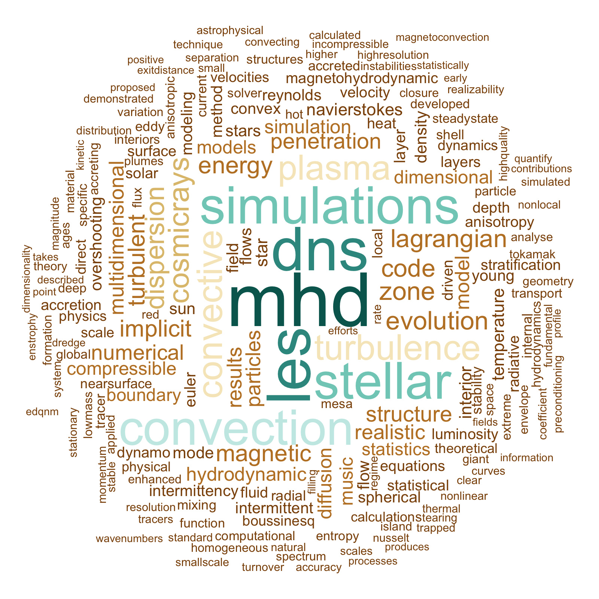

| About me |
| Codes |
| Outreach |
| Photos |
| Links |
| Quotes |
| What is Computational Astrophysics? |
 My research is in the field of Theoretical/Computational Astrophysics and my work centers on fluid dynamics of astrophysical plasmas, particularly flows in and around stars. I apply statistical methods to analyze the large data sets that I produce using massively parallel fluid codes. I use magnetohydrodynamic and fluid closures to understand how fundamental plasma physics like turbulence, magnetic instabilities, thermal convection, and the dynamo contribute to stellar evolution, space weather, and cosmic-ray diffusion. The word-cloud above is produced from keywords from my abstracts using R.
|
|
Find me on the web: |